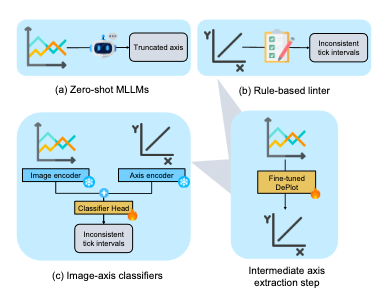
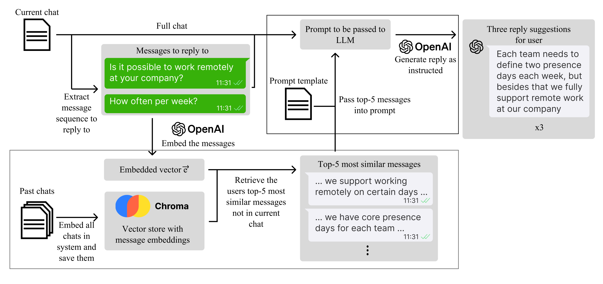
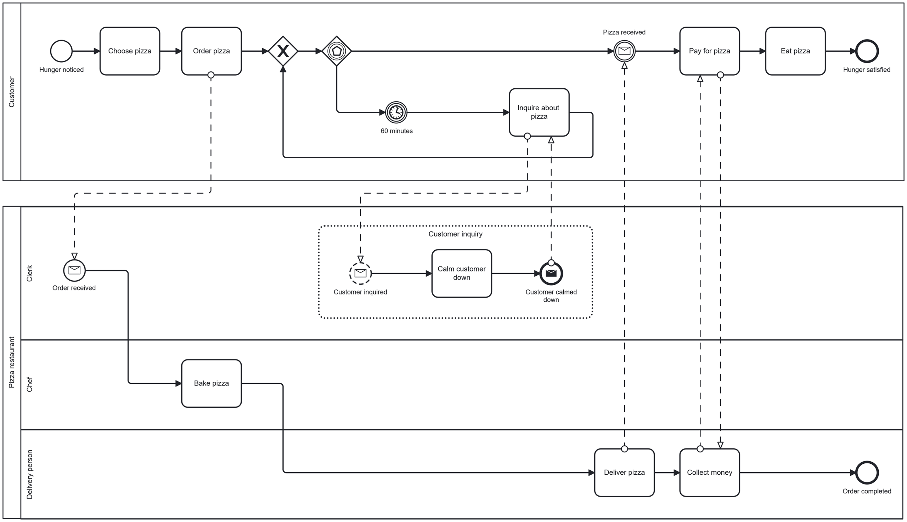

Hi, my name is
Jan Zimny
I engineer software, with a focus on machine learning and AI.
I'm a software engineer specializing in machine learning and NLP, with a background in research. My work on automated detection of misleading visualizations was published at ACL 2026. Currently at SAP SE, building data-driven tools and developing enterprise software used by 6,000+ customers worldwide.
01. About Me
Hello! I'm Jan, a software engineer and applied ML researcher. I enjoy working at the intersection of software engineering and machine learning. From fine-tuning vision-language models on GPU clusters to shipping production backend systems at enterprise scale.
I completed my M.Sc. in Computer Science in May 2025 at TU Darmstadt with distinction. My thesis on automated detection of misleading data visualizations, conducted in collaboration with KU Leuven (Belgium), was awarded the best possible grade and led to a paper accepted at ACL 2026.
At SAP SE I've built full-stack enterprise HR software, and initiated and led a weekly AI knowledge-sharing series for my team.
Here are some technologies I've been working with recently:
Enterprise / Backend
- Java
- Javascript
- Spring Framework
- Docker
- Kafka
- Kubernetes
- SAP BTP
- SQL
- SAP CAP
- LangChain / MCP
- SAP Fiori
ML / Research
- Python
- Pandas
- Jupyter Notebook
- Matplotlib
- PyTorch
- Accelerate
- HuggingFace
02. Experience
Software Engineer @ SAP SE
Oct 2019 – Present · St. Leon-Rot, Germany
Part-time (0.4 FTE) during M.Sc., Oct 2021 – Apr 2025
- Full-Stack Development: Backend-focused development in an 8-person agile team for the SAP SuccessFactors Time-Off module, used by 6,000+ enterprise customers worldwide.
- AI Knowledge Transfer: Initiated and lead a weekly AI competency workshop series on leveraging AI in software development. Authored team-wide end-to-end guidelines for AI-assisted development workflows.
- Performance Optimization: Served as team Performance Contact — identifying and resolving critical bottlenecks in the Time-Off module through profiling and targeted fixes.
- Production Reliability: Independently developed patches for critical customer issues; on-call duty and triage coordination with first-level support.
Department Rotations @ Fresenius SE
Aug 2016 – Aug 2019 · Bad Homburg, Germany
Dual-degree program alongside B.Sc. at DHBW Mannheim
- IT Security (Nov 2018 – Aug 2019): Automated security-incident detection and response workflows using Splunk and Splunk SOAR, aligned with BSI and NIST frameworks. Delivered IT security awareness workshops for executives across multiple departments.
- Mobile Development & PM (Jan 2017 – Aug 2018): Requirements analysis, design, and implementation of mobile apps including a SAP Fiori service-request application and a native Android app. Coordinated project management for an international SAP ERP rollout.
03. Some Things I've Built
Thesis and Resulting Publication · 2025/2026
Is This Chart Lying to Me?
- Python
- PyTorch
- HuggingFace
- VQA
- Slurm / HPC

University Project · 2024
Smart Reply Generation via RAG
- Python
- RAG
- Vector Embeddings
- Cosine Similarity
- NLP

Bachelor-Thesis at Fresenius SE · 2019
Network Intrusion Defense System
- Python
- Splunk
- Splunk SOAR
- Network Security
- NIST / BSI

Other Noteworthy Work
a handful of things I've shipped
Foodbank
University course project. A mobile app concept for reducing food waste. Keep track of items in your fridge that are about to expire and share surplus food with people nearby.
Geo-Diverse Common Inference Model: GD-COMET
Course project for NLP-Commonsense during my semester abroad at the University of British Columbia. Fine-tuning of COMET, a commonsense knowledge graph embedding model, on a geo-diverse dataset to improve culturally specific commonsense reasoning. One group member later developed the work into a published paper. I am listed in the Acknowledgements.
Development of a SAP Fiori Mobile Application for Viewing SAP Service Notifications
Developed a SAP Fiori mobile application for viewing SAP system service notifications at Fresenius SE on the go. The app provided a user-friendly interface for service technicians to access, filter and manage their service notifications on the go.
Android Native Application for Viewing .tiff file formats
Developed a native Android application for viewing .tiff file formats at Fresenius SE. The app supports multi-page TIFFs, zooming, and panning, providing a user-friendly interface for professionals who need to access and analyze TIFF images on the go. The app is intent registered to automatically be recommended for opening .tiff files.
04. Publications
ACL 2026 · San Diego · Forthcoming
Is this chart lying to me? Automating the detection of misleading visualizations
* equal contribution
What's Next?
Get In Touch
I'm currently open to new opportunities. Whether you have an interesting project in mind, want to talk applied ML or engineering, or just want to say hi. My inbox is always open!
Say Hello